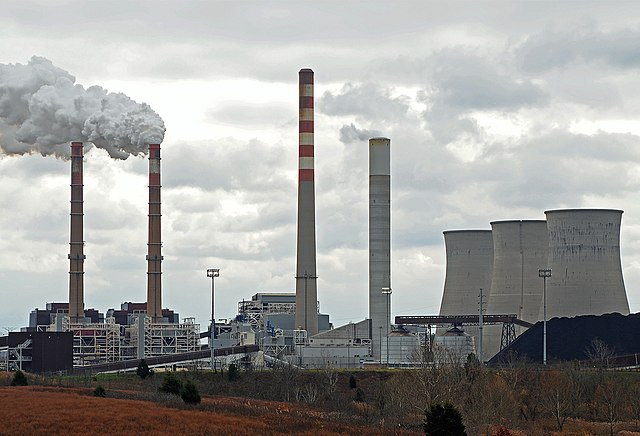

Fonti Rinnovabili e non Rinnovabili
Le risorse che vengono usate per dare energia sono divise in due categorie: fonti rinnovabili e fonti non rinnovabili.
- Disponibilità e tempi di rinnovo
- Costi di produzione e trasporto
- Impatto sull'ambiente e sulla salute delle persone
Le fonti Rinnovabili
Sono l'energia solare, eolica, geotermica, idroelettrica e le biomasse.
VANTAGGI FONTI RINNOVABILI
Le fonti rinnovabili hanno numerosi vantaggi rispetto ad un impatto ambientale:
- sono inesauribili
- largamente disponibili in tutte le zone della terra
- sono gratuite
- con un impatto ambientale minimo
- nessuna emissione di gas serra durante la produzione di energia elettrica
- impatto positivosulla salute dell'uomo
SVANTAGGI FONTI RINNOVABILI
Al contrario, tra i possibili svantaggi delle energie rinnovabili è necessario tenere conto dei seguenti fattori:
- produzione di energia non costante
- rendimento variabile a seconda delle condizioni climatiche
- necessità di trasformare l'infrastruttura attuale
- investimenti iniziali elevati
Le Fonti non Rinnovabili
Tra le principali fonti di energia non rinnovabile ci sono:
petrolio, gas naturale, carbone.
Le energie non rinnovabili si dividono in due categorie: combustibili fossili e nucleari.
I combustibili fossili sono la fonte di energia più usata al mondo e provengono da tutto il materiale organico che si è accumulato dentro la Terra.

I combustibili nucleari, sono dati dall'estrazione dell'uranio
VANTAGGI FONTI NON RINNOVABILI
Queste fonti energetiche hanno anche dei vantaggi rispetto alle rinnovabili:
- Consentono di produrre energia in modo economico
- permettono di generare elettricità in maniera costante
SVANTAGGI FONTI NON RINNOVABILI
Gli svantaggi delle fonti non rinnovabili invece sono:
- che le fonti non rinnovabili finiscono man mano che vengono consumate
- Queste fonti hanno un impatto importante sull'ambiente e sull'ecosistema